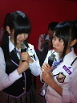

| 2012/05 05 Sat | ひめたん(* ゝω・*)ノ その145 |
PVの裏話!
個人PV-ひめたんの部屋-
PV撮影した日はなんと、都民歴２日目。
荷物はまだ広島から届いてなかったんですよね。
「私服いっぱい持ってきてねー(^^)」って言われたのですが時すでに遅し。
荷物は段ボールの中!!!あと２日くらいしたら新居に届く予定だとか...
撮影に間に合わんじゃん!
てなわけで、急いで手持ちの服を掻き集めて、それはそれは頑張りました♪
狼に口笛を
静岡のとある旧校舎におじゃましましたとさっ。
朝早かったんよね。寒かったんよねー。
しかも次の日はバスで名古屋個握レッツゴーからの、
明々後日は名古屋グランパスのホームでスタジアムライブってスケジュール。
アンダーのみんなとまるまる３日間一緒だったってことです(*^^*)
この３日でさらに絆が濃ゆくなった感ね
 うん
うん
うん
ハードってよりか、あっという間だった。楽しかった!
で、PVに映ってるかどうなのかちょっとわからんけど
ひめたん。なんと。人生初。
12センチのピンヒール!
狼のダンスは只でさえ激しいのに、さらにピンヒールはいて踊ってみた。
中元氏、勝負にでたんですね。
脚痛い。脚超痛い。
でもこれで完璧に踊れたらかっこよくね(`・ω・')?
いわゆるアイドル精神って奴がめらめら燃えたんですどや。
脚が痛いとかゆー感覚は、のちにわからなくなってくるものです。
終わったあとのやりきった感はまーじで気持ち良かった(o>ω<o)にゃ
それからそれからっ
PV系の質問どーん!
 生駒ちゃんの水玉模様ＭＶみたよ♪日芽香ちゃんのことだよね?
生駒ちゃんの水玉模様ＭＶみたよ♪日芽香ちゃんのことだよね?
ひめたんも見ました!めっちゃかわいーい(*/ω＼*)
16歳だもんね。ひめたんも歌えるもんね。
じゃあひめたん勝手に自分と重ねて歌ってみよっかな。
大人の気持ちはずっとわからないよ16歳。
おおーぴったりやんけ☆
おいシャンの振り付けが変わったみたいだね。
ひめたん的には前の振り付けどう思った?
前の振り付けもキュートで好きだったよー(^^)
でも新しいバージョンもみなさんに披露するその日までお楽しみにー!
おいシャンの衣装ひめたんはどう思ってる?ぐるカーとどっちが好き??
ぐるカーもおいシャンも、スカート長いよね。
ひめたん個人的な話になっちゃうけど、中学生時代の名残で
膝下スカート好きなんです(//ω//)てへぺろ
だって、なんか落ち着くんじゃもーん!
芋っ子ひめたんわら。

そしてそして今回は!
メンバーに関する質問が多かったけまとめてみた☆
 どのメンバーと仲良いの?さゆりんとかは??
一番仲がいいのは誰?
どのメンバーと仲良いの?さゆりんとかは??
一番仲がいいのは誰?
さゆりんご
(松村沙友理chan)仲良くしてもらってますよ(*^^*)
みんな仲良いから、答えにちょい困ったりするのだけれどもー。
やっぱり旧中3組の
いくちゃん
(生田絵梨花chan)
るんるん
(斎藤ちはるchan)は
いっつも一緒におるかな。
え?そろそろ「高1」って言いなさいよって?
まだまだ認めたくないんです(^ω^)わら
 推しメンは誰?
乃木坂の推しは?(^-^)
推しメンは誰?
乃木坂の推しは?(^-^)
かずみさーん
(高山一実chan)とは相思相愛っ

乃木メンの中で恋人にするとしたら誰?
彼女さんなら
まりか
(伊藤万理華chan)、
彼氏さんなら
みゅみゅ
(若月佑美chan)わら。
 乃木坂の中で一番みんなをまとめれて
乃木坂の中で一番みんなをまとめれて
しっかりしてる人ってひめたん的に誰?
やっぱり
れーか
(桜井玲香chan)キャプテンではないでしょうか(^-^)
 ねねころちゃんのブログに
ねねころちゃんのブログに
ひめたんにみつめられたらって書いてあったけど...
実際のところどうなの?ひめたんからみてねねころちゃんは
ねねころ
(伊藤寧々chan)かわいいーすきーっ(*^^*)
誰かと目があったら、そのままガンみするのよひめたん。
あっちが照れて目え反らすまで。ひめたんぽりしーです。
 キス魔で最近有名なせいらりんにチューされたことある?
キス魔で最近有名なせいらりんにチューされたことある?
ひめたんはなーいよ☆
ひめたんのちゅーしちゃうぞっはみんなのもの
 わら
わら
わら
(*´・ω・*)ひめたん
コメント(75)
2012/05/05 13:06